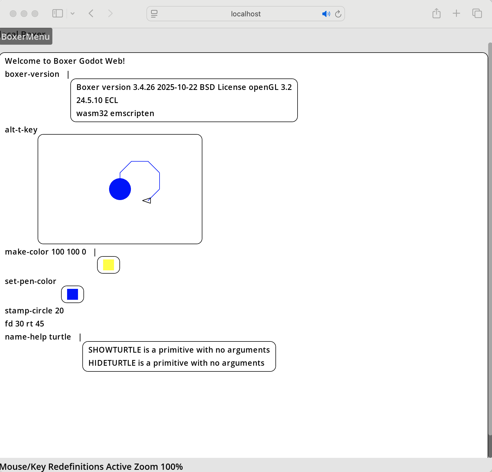

This is the first successful build of Boxer Godot WASM, compiled
on January 23rd, 2026. This is the full Boxer evaluator and primitives compiled to a C library using
Embedded Common Lisp and used
to power an in-progress frontend written in Godot. Here we are using a static C library with our Godot
extension compiled in as a full Godot modules, rather than as a GDExtension.
Many things dont work, and a lot of the keybindings aren't going through, but you can evaluate with Control-Enter. The WASM binary is quite large at the moment (50megs). Many things will be straightforward from this point to cleanup having wrangled an initial build. Additionally, this IS multithreaded, with the Boxer Evaluator Runtime running in it's own thread apart from the Godot main event loop/renderer, with 2 queues linking them in each direction. Screenshot below, and link to the working app above.
